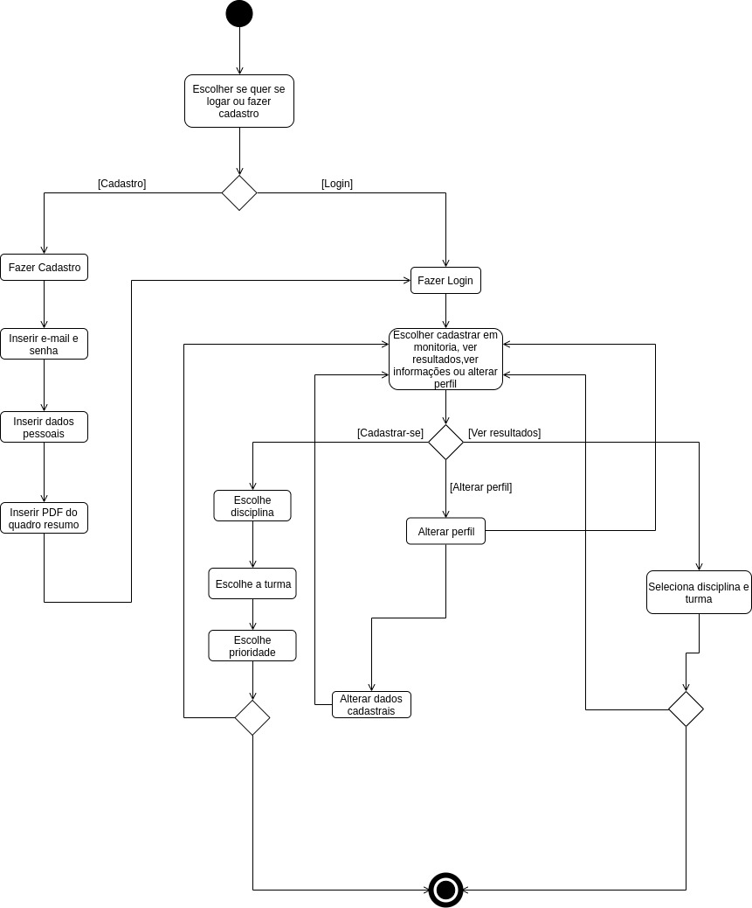
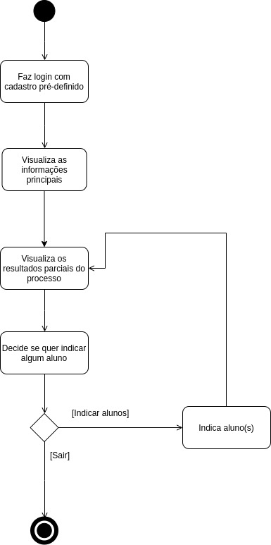

DIAGRAMA DE ATIVIDADES
Histórico de Revisão
| Data | Versão | Descrição | Autor(es) |
|---|---|---|---|
| 16/09/19 | 0.1 | Criação do estrutura inicial do documento | Andre Pinto e Leonardo Medeiros |
| 16/09/19 | 0.2 | Adição da introdução | Andre Pinto e Leonardo Medeiros |
| 16/09/19 | 0.3 | Adição do diagrama do Aluno v1.0 | Andre Pinto e Leonardo Medeiros |
| 16/09/19 | 0.4 | Adição do diagrama do Professor v1.0 | Andre Pinto e Leonardo Medeiros |
| 17/11/19 | 0.5 | Adição do diagrama do Professor v2.0 | Andre Pinto e Ivan Dobbin |
| 17/11/19 | 0.6 | Adição do diagrama do aluno v2.0 | Andre Pinto e Ivan Dobbin e Leonardo Medeiros |
Introdução
O diagrama de atividades é um diagrama UML utilizado para modelar o aspecto comportamental de processos. Neste diagrama, uma atividade é modelada como uma sequência estruturada de ações, controladas potencialmente por nós quanto a decisão e sincronismo. O foco, portanto, está nos procedimentos, processos de negócio e fluxo de trabalho.
Diagrama de Atividades do Aluno
V1.0

V2.0

Diagrama de Atividades do Professor
V1.0

V2.0
